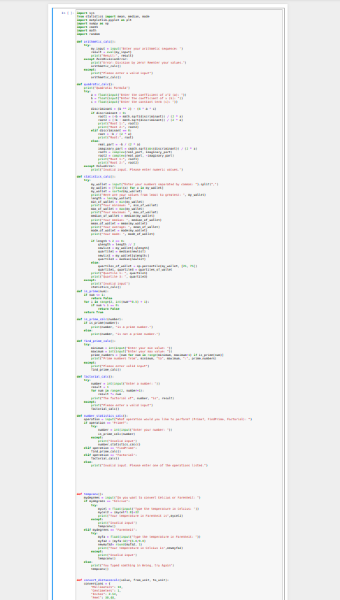
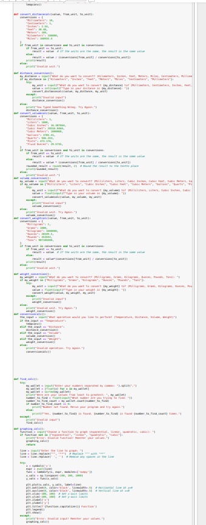

Computer Science Internship 2023
Over the summer of 2023, I took a six week Computer Science internship under the guidance of Professor Ioan Raicu at the Illinois Institute of Technology. I learned how to code in Python and HTML. Here are a few projects that I made throughout the summer.

import micropip
import sys
from statistics import mean, median, mode
import cmath
import math
import random
import asyncio
import pyodide
def arithmetic_calc():
try:
my_input = input("Enter your arithmetic sequence: ")
result = eval(my_input)
print("Result:", result)
except ZeroDivisionError:
print("Error: Division by zero! Reenter your values.")
arithmetic_calc()
except:
print("Please enter a valid input")
arithmetic_calc()
def quadratic_calc():
print("Quadratic Formula")
try:
a = float(input("Enter the coefficient of x^2 (a): "))
b = float(input("Enter the coefficient of x (b): "))
c = float(input("Enter the constant term (c): "))
discriminant = (b ** 2) - (4 * a * c)
if discriminant > 0:
root1 = (-b + math.sqrt(discriminant)) / (2 * a)
root2 = (-b - math.sqrt(discriminant)) / (2 * a)
print("Root 1:", root1)
print("Root 2:", root2)
elif discriminant == 0:
root = -b / (2 * a)
print("Root:", root)
else:
real_part = -b / (2 * a)
imaginary_part = cmath.sqrt(abs(discriminant)) / (2 * a)
root1 = complex(real_part, imaginary_part)
root2 = complex(real_part, -imaginary_part)
print("Root 1:", root1)
print("Root 2:", root2)
except ValueError:
print("Invalid input. Please enter numeric values.")
def statistics_calc():
try:
my_wallet = input("Enter your numbers separated by commas: ").split(",")
my_wallet = [float(x) for x in my_wallet]
my_wallet = sorted(my_wallet)
print("Here are your values from least to greatest: ", my_wallet)
length = len(my_wallet)
min_of_wallet = min(my_wallet)
print("Your minimum: ", min_of_wallet)
max_of_wallet = max(my_wallet)
print("Your maximum: ", max_of_wallet)
median_of_wallet = median(my_wallet)
print("Your median: ", median_of_wallet)
mean_of_wallet = mean(my_wallet)
print("Your average: ", mean_of_wallet)
mode_of_wallet = mode(my_wallet)
print("Your mode: ", mode_of_wallet)
if length % 2 == 0:
qlength = length // 2
newlist = my_wallet[:qlength]
quartile1 = median(newlist)
newlist = my_wallet[qlength:]
quartile3 = median(newlist)
else:
quartiles_of_wallet = np.percentile(my_wallet, [25, 75])
quartile1, quartile3 = quartiles_of_wallet
print("Quartile 1: ", quartile1)
print("Quartile 3: ", quartile3)
except:
print("Invalid input")
statistics_calc()
def is_prime(num):
if num <= 1:
return False
for i in range(2, int(num**0.5) + 1):
if num % i == 0:
return False
return True
def is_prime_calc(number):
if is_prime(number):
print(number, "is a prime number.")
else:
print(number, "is not a prime number.")
def find_prime_calc():
try:
minimum = int(input("Enter your min value: "))
maximum = int(input("Enter your max value: "))
prime_numbers = [num for num in range(minimum, maximum+1) if is_prime(num)]
print("Prime numbers from", minimum, "to", maximum, ":", prime_numbers)
except:
print("Please enter valid input")
find_prime_calc()
def factorial_calc():
try:
number = int(input("Enter a number: "))
result = 1
for num in range(2, number+1):
result *= num
print("The factorial of", number, "is", result)
except:
print("Please enter a valid input")
factorial_calc()
def number_statistics_calc():
operation = input("What operation would you like to perform? (Prime?, FindPrime, Factorial): ")
if operation == "Prime?":
try:
number = int(input("Enter your number: "))
is_prime_calc(number)
except:
print("Invalid input")
number_statistics_calc()
elif operation == "FindPrime":
find_prime_calc()
elif operation == "Factorial":
factorial_calc()
else:
print("Invalid input. Please enter one of the operations listed.")
def tempconv():
mydegrees = input("Do you want to convert Celcius or Farenheit: ")
if mydegrees == "Celcius":
try:
mycel = float(input("Type the temperature in Celcius: "))
mycel2 = (mycel*1.8)+32
print("Your temperature in Farenheit is",mycel2)
except:
print("Invalid input")
tempconv()
elif mydegrees == "Farenheit":
try:
myfa = float(input("Type the temperature in Farenheit: "))
myfa2 = (myfa-32)*(5.0/9.0)
newmyfa2= round(myfa2, 1)
print("Your temperature in Celcius is",newmyfa2)
except:
print("Invalid input")
tempconv()
else:
print("You Typed somthing in Wrong, try Again")
tempconv()
def convert_distancecalc(value, from_unit, to_unit):
conversions = {
"Millimeters": 10,
"Centimeters": 1,
"Inches": 2.54,
"Feet": 30.48,
"Meters": 100,
"Kilometers": 100000,
"Miles": 160934.4
}
if from_unit in conversions and to_unit in conversions:
if from_unit == to_unit:
result = value # If the units are the same, the result is the same value
else:
result = value / (conversions[from_unit] / conversions[to_unit])
print(result)
else:
print("Invalid unit.")
def distance_conversion():
my_distance = input("What do you want to convert? (Kilometers, Inches, Feet, Meters, Miles, Centimeters, Millimeters): ")
if my_distance in ["Kilometers", "Inches", "Feet", "Meters", "Miles", "Centimeters", "Millimeters"]:
try:
my_unit = input(f"What do you want to convert {my_distance} to? (Millimeters, Centimeters, Inches, Feet, Meters, Kilometers, Miles): ")
value = int(input(f"Type in your distance in {my_distance}: "))
convert_distancecalc(value, my_distance, my_unit)
except:
print("Invalid input")
distance_conversion()
else:
print("You Typed Something Wrong. Try Again.")
distance_conversion()
def convert_volumecalc(value, from_unit, to_unit):
conversions = {
"Milliliters": 1,
"Liters": 1000,
"Cubic Inches": 16.387064,
"Cubic Feet": 28316.8466,
"Cubic Meters": 1000000,
"Gallons": 3785.41,
"Quarts": 946.353,
"Pints": 473.176,
"Fluid Ounces": 29.5735,
}
if from_unit in conversions and to_unit in conversions:
if from_unit == to_unit:
result = value # If the units are the same, the result is the same value
else:
result = value * (conversions[from_unit] / conversions[to_unit])
rounded_result = round(result, 2) # Round the result to the tenths place
print(rounded_result)
else:
print("Invalid unit.")
def volume_conversion():
my_volume = input("What do you want to convert? (Milliliters, Liters, Cubic Inches, Cubic Feet, Cubic Meters, Gallons, Quarts, Pints, Fluid Ounces): ")
if my_volume in ["Milliliters", "Liters", "Cubic Inches", "Cubic Feet", "Cubic Meters", "Gallons", "Quarts", "Pints", "Fluid Ounces"]:
try:
my_unit = input(f"What do you want to convert {my_volume} to? (Milliliters, Liters, Cubic Inches, Cubic Feet, Cubic Meters, Gallons, Quarts, Pints, Fluid Ounces): ")
value = float(input(f"Type in your volume in {my_volume}: "))
convert_volumecalc(value, my_volume, my_unit)
except:
print("Invalid input")
volume_conversion()
else:
print("Invalid unit. Try Again.")
volume_conversion()
def convert_weightcalc(value, from_unit, to_unit):
conversions = {
"Milligrams": 1,
"Grams": 1000,
"Kilograms": 1000000,
"Ounces": 28349.5,
"Pounds": 453592,
"Tons": 907185000,
}
if from_unit in conversions and to_unit in conversions:
if from_unit == to_unit:
result = value # If the units are the same, the result is the same value
else:
result = value*(conversions[from_unit] / conversions[to_unit])
print(result)
else:
print("Invalid unit.")
def weight_conversion():
my_weight = input("What do you want to convert? (Milligrams, Grams, Kilograms, Ounces, Pounds, Tons): ")
if my_weight in ["Milligrams", "Grams", "Kilograms", "Ounces", "Pounds", "Tons"]:
try:
my_unit = input(f"What do you want to convert {my_weight} to? (Milligrams, Grams, Kilograms, Ounces, Pounds, Tons): ")
value = float(input(f"Type in your weight in {my_weight}: "))
convert_weight(value, my_weight, my_unit)
except:
print("Invalid input")
weight_conversion()
else:
print("Invalid unit. Try Again.")
weight_conversion()
def conversioncalc():
the_input = input("What operation would you like to perform? (Temperature, Distance, Volume, Weight)")
if the_input == "Temperature":
tempconv()
elif the_input == "Distance":
distance_conversion()
elif the_input == "Volume":
volume_conversion()
elif the_input == "Weight":
weight_conversion()
else:
print("Invalid operation. Try again.")
conversioncalc()
def find_calc():
try:
my_wallet = input("Enter your numbers separated by commas: ").split(",")
my_wallet = [float(x) for x in my_wallet]
my_wallet = sorted(my_wallet)
print("Here are your values from least to greatest: ", my_wallet)
number_to_find = float(input("What number are you trying to find: "))
number_to_find_count = my_wallet.count(number_to_find)
if number_to_find_count == 0:
print("Number not found. Rerun your program and try again.")
else:
print(f"Yes, {number_to_find} is found. {number_to_find} is found {number_to_find_count} times.")
except:
print("Invalid input")
find_calc()
def exponentiation_calc():
try:
base = float(input("Enter the base number: "))
exponent = float(input("Enter the exponent value: "))
result = base ** exponent
print("Result:", result)
except:
print("Invalid input")
exponentiation_calc()
def square_root_calc():
try:
number = float(input("Enter the number: "))
result = math.sqrt(number)
print("Result:", result)
except:
print("Invalid input")
square_root_calc()
def random_guessing_game():
mode = input("Choose the game mode (easy, neutral, hard): ")
if mode not in ["easy", "neutral", "hard"]:
print("Invalid game mode! Please choose one of the available modes.")
random_guessing_game()
return
if mode == "easy":
random_number = random.randint(0, 10000)
max_guesses = 11
elif mode == "neutral":
random_number = random.randint(-10000, 10000)
max_guesses = 11
else:
random_number = random.randint(-20000, 20000)
max_guesses = 11
print(f"You are on {mode.upper()} mode. You have {max_guesses} guesses to guess an integer.")
for i in range(1, max_guesses + 1):
guess = int(input("Enter your guess: "))
if guess == random_number:
print("Congratulations! You guessed correctly.")
break
elif guess < random_number:
print("Too small. Try again.")
else:
print("Too large. Try again.")
if i == max_guesses - 3:
print("3 more guesses left. Would you like a hint?")
elif i == max_guesses - 2:
print("2 more guesses left. You are approaching your doom.")
elif i == max_guesses - 1:
print("1 more guess left. Accept your fate, mortal.")
elif i == max_guesses:
print(f"The correct answer was {random_number}! You have failed.")
print("The game is over.")
def grandissimo():
while True:
user_input = input("What do you want the calculator to do? Choose an option: arithmetic, quadratic formula, statistics, number statistics, conversion, find command, exponentiation, square root, stop running\n")
if user_input == "arithmetic":
arithmetic_calc()
elif user_input == "quadratic formula":
quadratic_calc()
elif user_input == "statistics":
statistics_calc()
elif user_input == "number statistics":
number_statistics_calc()
elif user_input == "conversion":
conversioncalc()
elif user_input == "find command":
find_calc()
elif user_input == "exponentiation":
exponentiation_calc()
elif user_input == "square root":
square_root_calc()
elif user_input == "stop running":
decision = input("Before exiting the calculator, would you like to play a random guessing game? (yes/no): ")
if decision == "yes":
random_guessing_game()
else:
sys.exit("Exiting the calculator")
else:
print("ERROR! Enter a valid option.")
grandissimo()